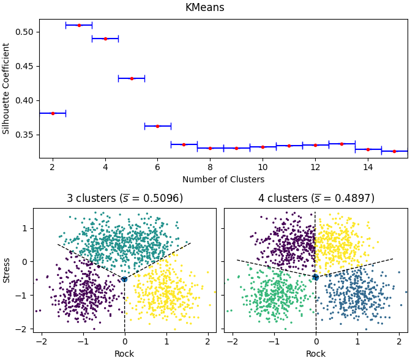
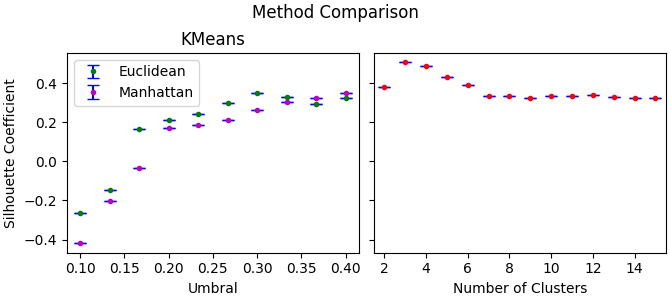

GCom: Practica 2
1. Introducción
Se quiere agrupar los datos recibidos según estén mas o menos cerca dados los parámetros de la muestra, utilizaremos algoritmos de Clustering como KMeans ó DBSCAN con este fin.
2. Material Usado
Librerias y Paquetes
Para está practica se utilizarán a parte de las librerias que generalmente se utilizan en cualquier proyecto como matplotlib, numpy y scipy las siguientes librerias de python.
- Scikit-Learn Por su implementación de los diferentes algoritmos de clustering necesarios.
- Scipy Por su implementación de un método sencillo para dibujar diagramas de Voronoi.
Errores
Al tratar de realizar la comparación de los datos obtenidos con los correctos, nos dimos cuenta de que por la asignación arbitraría de etiquetas en las agrupaciones de la muestra, era necesarío algun algoritmo o criterío para identificar etiquetas de muestra con las etiquetas correctas.
Para resolver ese problema se reasignaron etiquetas \( \left\{ n_{1}, n_2, n_3, n_4 \right\} \) a la muestra y \( \left\{ m_{1}, m_2, m_3, m_4 \right\} \) al control, tal que \( \forall i, j, k, l \quad i \ne k \land j \ne l \implies n_{i} + m_{j} \neq n_k + m_l \) de este modo añadiremos los valores de las etiquetas asignadas para diferenciar donde el etiquetado coincidió de donde agrupamos incorrectamente, respecto al control, sin vernos influenciados por los cambios de nombre de las etiquetas en sí.
3. Resultados
Apartado 1

Apartado 2

Apartado 3
- \( (0,0) \) pertenece al grado 1
- \( (0, -1) \) pertenece al grado 0
4. Conclusión
El número de clusters óptimo según el algoritmo ha resultado no corresponder al real suplementado en los datos, aún asi, un segundo resultado muy cercano a la optimalidad si coincide y sólo nos equivocamos en ese caso en menos del 7% de los sujetos. cosas
Apéndice de Código
""" Clustering analisis on a given sample with KMeans and DEPSCAN. """ # import sys from collections import Counter from functools import reduce from sklearn.cluster import KMeans, DBSCAN from sklearn.metrics import silhouette_samples # type: ignore from scipy.spatial import Voronoi, voronoi_plot_2d import numpy as np # type: ignore import matplotlib.pyplot as plt # type: ignore UNCLUSTERED_SAMPLE = "./samples/Personas_en_la_facultad_matematicas.txt" CLUSTERED_SAMPLE = "./samples/Grados_en_la_facultad_matematicas.txt" data = np.loadtxt(UNCLUSTERED_SAMPLE, encoding="latin-1") control = np.loadtxt(CLUSTERED_SAMPLE, encoding="latin-1") # We find the optimum number of clusters n_iters: int = 10 delta: float = 0.001 N_CLUSTERS_MIN: int = 2 N_CLUSTERS_MAX: int = 15 # the dict data structure fits better for an indexed access kmeans: dict[int, KMeans] = dict((n_clusters, KMeans(n_clusters, init="random", n_init='auto', tol=delta).fit(data)) for n_clusters in range(N_CLUSTERS_MIN, N_CLUSTERS_MAX + 1)) dbscan_euclid: dict[int, DBSCAN] = dict((umbral, DBSCAN(eps=umbral, metric="euclidean", min_samples=10).fit(data)) for umbral in np.linspace(0.1, 0.4, num=10)) dbscan_manhat: dict[int, DBSCAN] = dict((umbral, DBSCAN(eps=umbral, metric="manhattan", min_samples=10).fit(data)) for umbral in np.linspace(0.1, 0.4, num=10)) s_samples: dict[int, np.array] = dict( (i, silhouette_samples(data, sample.labels_)) for i, sample in kmeans.items()) s_bar: dict[int, float] = dict((i, np.mean(sample)) for i, sample in s_samples.items()) # Error de s_bar s_bar_e: dict[int, float] = dict((i, np.std(sample) / len(sample)) for i, sample in s_samples.items()) dbs_s_s: dict[int, np.array] = dict( (i, silhouette_samples(data, sample.labels_)) for i, sample in dbscan_euclid.items()) dbs_s_b: dict[int, float] = dict((i, np.mean(sample)) for i, sample in dbs_s_s.items()) # Error de dbs_s_b dbs_s_b_e: dict[int, float] = dict((i, np.std(sample) / len(sample)) for i, sample in dbs_s_s.items()) dbs_m_s_s: dict[int, np.array] = dict( (i, silhouette_samples(data, sample.labels_)) for i, sample in dbscan_manhat.items()) dbs_m_s_b: dict[int, float] = dict((i, np.mean(sample)) for i, sample in dbs_m_s_s.items()) # Error de dbs_m_s_b dbs_m_s_b_e: dict[int, float] = dict((i, np.std(sample) / len(sample)) for i, sample in dbs_m_s_s.items()) optimum = reduce(lambda a, b: a if a[1] > b[1] else b, s_bar.items(), (0, -1.0))[0] vor = {3: Voronoi(kmeans[3].cluster_centers_), 4: Voronoi(kmeans[4].cluster_centers_)} # We now plot our findings kmeans_fig = plt.figure(layout="constrained", figsize=(6.7, 5.9)) kmeans_fig.suptitle("KMeans") silhouette_fig, clusters_fig = kmeans_fig.subfigures(2, 1) silhouette_axis = silhouette_fig.add_subplot() silhouette_axis.set_ylabel("Silhouette Coefficient") silhouette_axis.set_xlabel("Number of Clusters") silhouette_axis.set_xlim(1.5, 15.5) silhouette_axis.errorbar(s_bar.keys(), s_bar.values(), xerr=0.5, yerr=np.array(list(s_bar_e.values())), fmt='.r', capsize=4, ecolor='b') clusters_axis = clusters_fig.subplots(1, 2, sharey=True) voronoi_plot_2d(vor[3], ax=clusters_axis[0], show_points=False) clusters_axis[0].set_xlabel("Rock") clusters_axis[0].set_ylabel("Stress") clusters_axis[0].set_xlim(-2.2, 2.2) clusters_axis[0].set_ylim(-2.1, 1.6) clusters_axis[0].set_title(("3 clusters " f"($\\overline{{s}}$ = {round(s_bar[3],4)})")) clusters_axis[0].scatter(data[:, 0], data[:, 1], s=2, c=kmeans[3].labels_) voronoi_plot_2d(vor[4], ax=clusters_axis[1], show_points=False) clusters_axis[1].set_xlabel("Rock") clusters_axis[1].set_xlim(-2.2, 2.2) clusters_axis[1].set_ylim(-2.1, 1.6) clusters_axis[1].set_title(("4 clusters " f"($\\overline{{s}}$ = {round(s_bar[4],4)})")) clusters_axis[1].scatter(data[:, 0], data[:, 1], s=2, c=kmeans[4].labels_) kmeans_fig.savefig("kmeans.png") dbscan_fig = plt.figure(layout="constrained", figsize=(6.7, 3)) dbscan_fig.suptitle("Method Comparison") silhouette_dbs_axis = dbscan_fig.subplots(1, 2, sharey = True) silhouette_dbs_axis[0].set_title("DBSCAN") silhouette_dbs_axis[0].set_ylabel("Silhouette Coefficient") silhouette_dbs_axis[0].set_xlabel("Umbral") silhouette_dbs_axis[0].errorbar(dbs_s_b.keys(), dbs_s_b.values(), yerr=np.array(list(dbs_s_b_e.values())), fmt='.g', capsize=4, ecolor='b') silhouette_dbs_axis[0].errorbar(dbs_m_s_b.keys(), dbs_m_s_b.values(), yerr=np.array(list(dbs_m_s_b_e.values())), fmt='.m', capsize=4, ecolor='b') silhouette_dbs_axis[0].legend(["Euclidean", "Manhattan"]) silhouette_dbs_axis[0].set_title("KMeans") silhouette_dbs_axis[1].set_xlabel("Number of Clusters") silhouette_dbs_axis[1].set_xlim(1.5, 15.5) silhouette_dbs_axis[1].errorbar(s_bar.keys(), s_bar.values(), yerr=np.array(list(s_bar_e.values())), fmt='.r', capsize=4, ecolor='b') dbscan_fig.savefig("dbscan.png") plt.close() # para ver los que no pertenecen al mismo cluster primero busco labels que # sumen diferente, y entonces hago la suma y miro los outliers y los sumo # este procedimiento quizás no es el más optimo pero al menos es linear sample_relabeling = {0: 0, 1: 1, 2: 4, 3: 10} sample_relabeler = np.vectorize(lambda x: sample_relabeling[x]) control_relabeling = {0: 0, 1: 2, 2: 7, 3: 13} control_relabeler = np.vectorize(lambda x: control_relabeling[x]) contrastes = (sample_relabeler(kmeans[4].labels_) + control_relabeler(control[:, 0])) frequences = Counter(contrastes) df = sum(i for (_, i) in frequences.most_common()[4:]) # the first most common are the ones correctly clustered print(df / frequences.total())